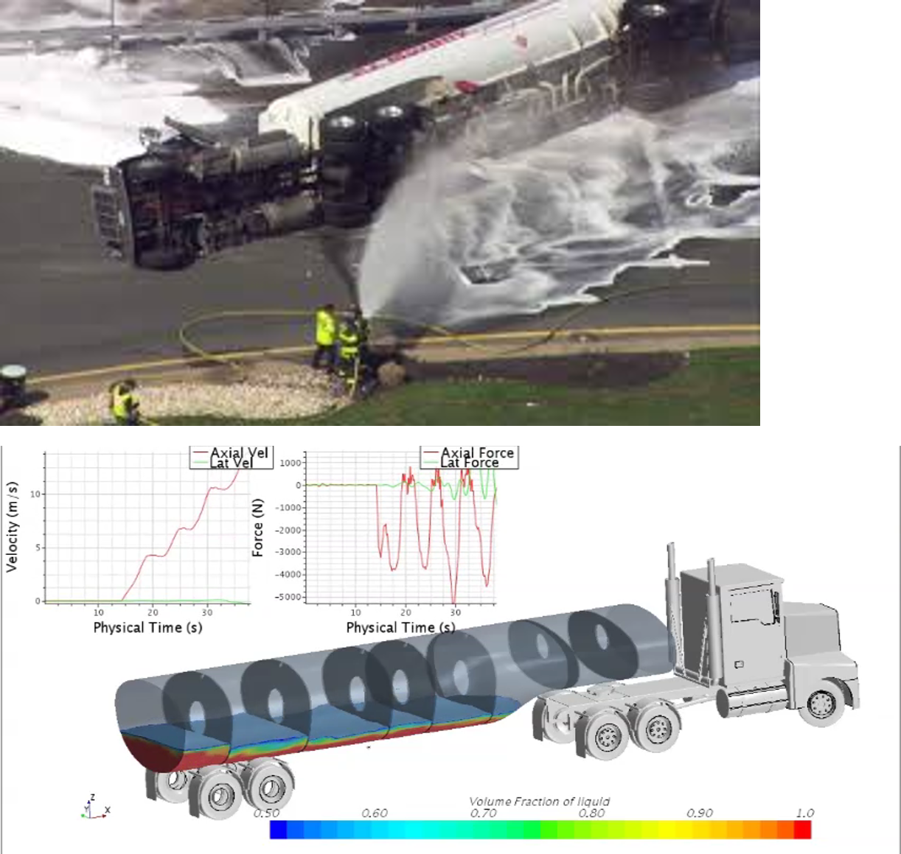
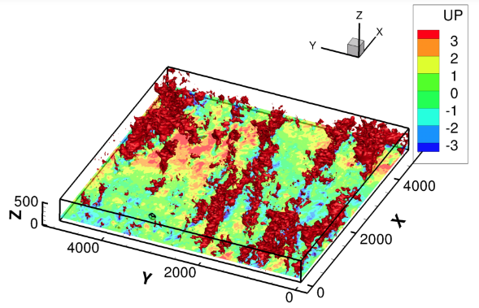
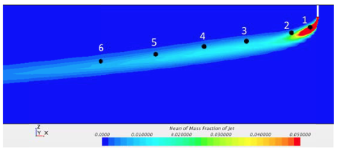
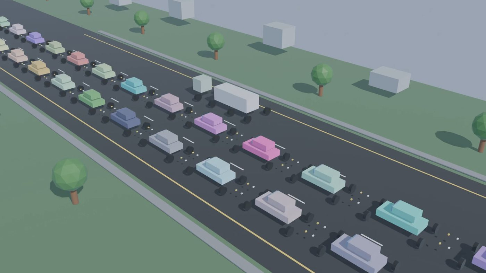
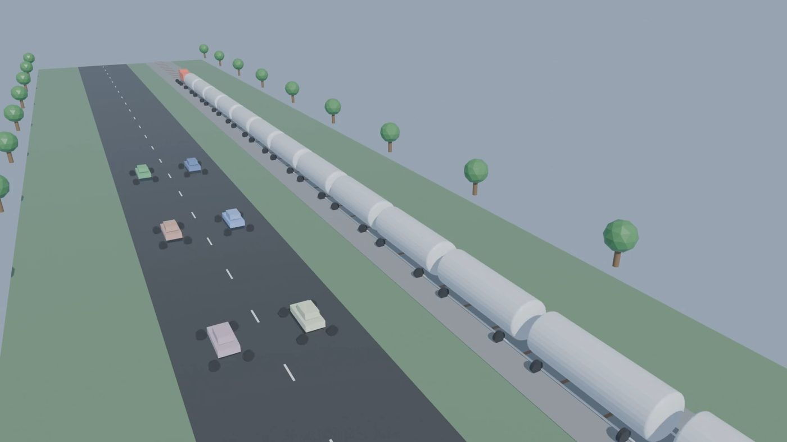
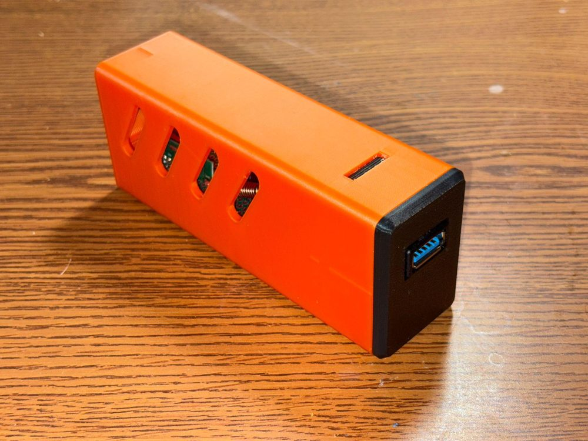
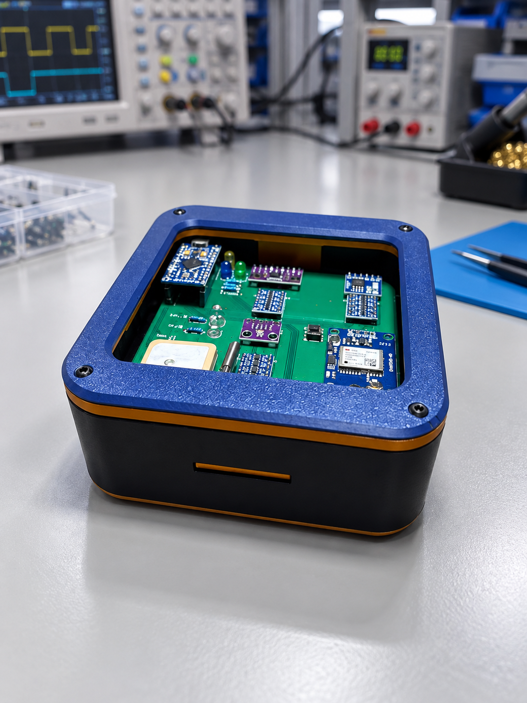
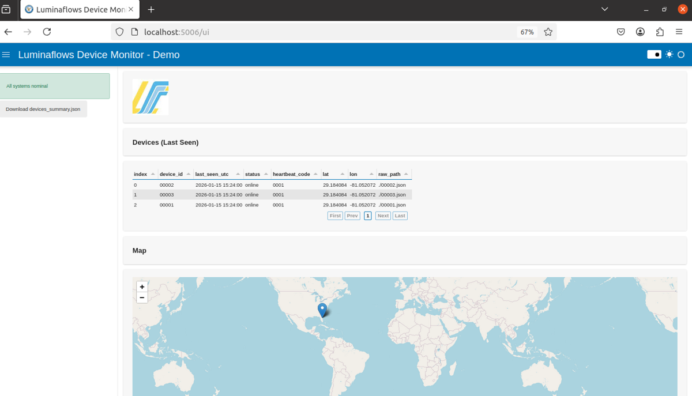
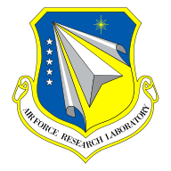
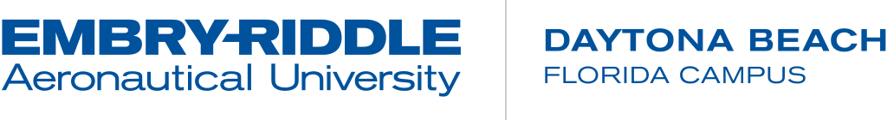

Lumina Flows links simulation, logistics, sensing, and environmental forecasting into a single digital
thread, so defense and space operators can see conditions, test decisions, and adapt in real time.
Continuous, traceable data from design to decision.
A digital thread ties geometry, simulation results, manufacturing records, logistics state, and operational
telemetry into one lineage. Every decision can be traced to the model and the data behind it, and every
model can be updated by what the field observes.
Traceability: results tied to versioned geometry, inputs, and solver settings.
Interoperability: open data exchange between CAD, CFD, GIS, and operations tools.
Visibility: one view across engineering, logistics, and command.
DesignCAD · requirements
SimulateCFD · structures
Buildmanufacturing
Movelogistics · LuminaBox
Operatesensing · weather
Decidecommand view
Operational data returns to the model ↻
Logistics · Connection of Modern to LuminaBox
A digital logistics layer for readiness and continuity.
LuminaBox is an embedded unit that tracks the location and health of whatever it is attached to, such as
containers, tankers, and vehicles, and reports to a main station for a real-time feed of the whole site.
Connected to logistics and infrastructure models, it turns asset flow into something you can simulate and
manage.
Traffic and infrastructure simulation, for example whether dedicated truck lanes or expanded rail get fuel to pads faster.
Road-health flagging: a tanker hitting a bump reports it to command for remediation.
Dynamic work tasking that re-plans when supply or weather breaks the chain.

Tanker liquid-slosh simulation: velocity and force histories.
Real-time CFD enabled through GPUs
Flow physics fast enough to inform the decision.
GPU acceleration moves computational fluid dynamics from an overnight analysis to a tool used during
planning and operations. Faster-than-real-time flow simulation of a vertical Artemis 2 configuration is one
example. The same approach supports ship airwake, plume dispersion, and turbulent boundary layers.
Speed: turnaround compatible with operational timelines.
Fidelity: resolved turbulence and geometry, not lookup tables.
Decision support: results delivered in the context of the mission.
Faster-than-real-time flow simulation of a vertical Artemis 2 on the padShip airwake

Atmospheric boundary layer

Plume dispersion
Counter-UAS
Layered detection, sensing, and response.
An integrated approach that fuses sensor inputs into a single operating picture and supports timely
response decisions. Environmental modeling adds what most systems lack: how wind, turbulence, and site
geometry affect sensing and engagement conditions.
Multi-sensor detection and tracking in one common picture.
Layered defense that matches the response to the threat.
Real-time decision support for operators and command.
Conceptual layered-defense schematic
LuminaTwin · LuminaBox
Turning spaceports into adaptive systems.
LuminaTwin is a digital twin that pairs low-cost hardware with advanced simulation software for more
informed launch scheduling and adaptive workflows. LuminaBox is the sensing hardware that keeps it tied to
the real site.
The problem: launch scrubs
1 in 3
launch attempts scrubbed, per the current NASA rule of thumb, for a range of causes.
Annual scrub cost
TodayKSC + CCSFS
~$20M
At target cadenceJoint AF / Space Force
~$100M
Excludes additional costs from work delays that do not lead to a scrub.
System architecture · how LuminaBox data reaches LuminaTwin
Active path:Base station (site RF)
The link manager prefers the lowest-latency path in range and fails over without losing data. Select a path above, or click a node to see it in the 3D model.
Module 1 · Long-term spaceport planning
Find the bottleneck, then test the fix before building it.
The planning tool locates bottlenecks in existing spaceport configurations and simulates proposed
infrastructure changes. Optimization, simulation, and AI surrogate models balance upfront cost against
launch-cadence gains.
Example: fuel delivery. At Cape Canaveral, vehicle traffic can delay fuel trucks, and the
problem worsens as cadence rises. Street and rail maps plus traffic and discrete-event simulation
identify which projects, such as dedicated truck lanes or expanded rail, pay off.


Truck-lane scenarioMixed traffic
Simulated scenarios from the LuminaTwin planning module. Drag to compare.
Module 2 · Operational monitoring & adaptation
Weather knowledge at the scale of the work.
Faster-than-real-time, high-resolution weather models upsample NOAA forecasts from 1.8 mi to 1 ft
resolution. Managers can re-plan daily tasks around unforeseen weather, and the same approach extends to
supply-chain disruptions or staffing changes.
A linear resolution gain of roughly 9,500× (1.8 mi is about 9,500 ft).
NOAA model cell 1.8 mi
→
Facility-scale field 1 ft
Schematic. Cell counts are not to scale.
Operations module · adaptive work tasking
When the weather changes, the work plan changes with it.
LuminaTwin watches the high-resolution forecast and checks every scheduled task against it. Tasks that
would put people outdoors in unsafe conditions are swapped for useful indoor work, so nobody stands idle
and nobody is exposed.
1 · DetectThe forecast shows lightning within 5 nautical miles of the pad.
2 · CheckThe twin looks at each task: is it outdoors, and how close to the pad?
3 · ReassignExposed tasks move indoors or later. The crew is notified.
Forecast for the pad
Crew
Task
Where
Status
LuminaBox · sensing hardware
Health and location of whatever it is attached to.
LuminaBox monitors payloads, vehicle segments, containers, and tankers, in storage or in transit. It
senses collisions, vibration, temperature, and humidity and reports to a base station, giving LuminaTwin a
live feed of the entire site.
Collision
Vibration
Temperature
Humidity
Location


Use case · road health
Flag road damage before it becomes a problem.
A LuminaBox on a fuel tanker registers a vertical acceleration spike when the truck hits a bump, and the
affected road segment is reported to the command center for remediation.
Vertical acceleration, tanker passIllustrative
Monitoring…
Base station software
Live device monitor.
A web console lists each LuminaBox, its latest readings, and its position on a map.

Interactive 3D · CAD + live weather
See the forecast on the facility, not just on the map.
A 3D geospatial twin of the Kennedy Space Center and Cape Canaveral area, connected to open-source weather
prediction data. Forecast winds and precipitation are projected onto facility massing, roads, and
LuminaBox-tracked TEU containers, so you can see which assets and work areas are affected, and when.
Switch between road transit, warehouse inventory, shipping routes into Cape Canaveral, and a notional
rocket-cargo delivery to Japan, with satellite communications carrying tracking wherever RF and cellular
coverage ends. Drag to orbit, scroll to zoom.
Facilities
Weather resolution
Data layers
Connectivity
Site overviewLoading data…
LuminaBox tracking
Loading 3D map…
Wind speed at 2 m · downscaled
0m/s
Hypothetical simulation
LuminaBox LB-207
Tracking 1 TEU
TEU tracked by a LuminaBox
Base-station RF link
Cellular (LTE / 5G) link
SATCOM link via satellite
Base station
Drag to orbit · scroll to zoom · right-drag or Ctrl-drag to tilt
LuminaBox feed
Operational readout
Site overview
-
Wind
-
Gust
-
Precipitation
-
Temperature
-
Gust · 48 h (m/s)
Precipitation · 48 h (mm/h)
Weather: Open-Meteo open forecast API (open national models). Radar: NOAA MRMS. Imagery: OpenStreetMap
contributors. Facility footprints and heights are approximate massing for concept demonstration, not
survey or CAD data. LuminaBox telemetry, container contents, the warehouse, shipping routes, the
satellite constellation, and the Japan delivery trajectory are simulated or approximate, for illustration. Status thresholds are illustrative. Not for operational use.
Clients & institutions
Consulting and program work in advanced defense technology.
Client engagement
Persus Defense
Strategic technical consulting supporting advanced defense and mission technology development.
Client engagement
SerenX Defense
Program partnership in advanced defense and mission technology.
Funders & stakeholders
Research and development supported by U.S. government sponsors.
Logos identify organizations connected to selected experience and collaborations; their presence does not
imply endorsement.
Government

Academic collaborators

Technical credibility
Peer-reviewed physics, applied to operational problems.
The methods behind our platforms are published and validated. The figures below come from our project
materials and publications.
1.8 mi → 1 ftWeather-model upsampling from NOAA forecast resolution to facility scale
1 in 3Launch attempts scrubbed under the current NASA rule of thumb
~$20M → ~$100MAnnual scrub cost today, scaled to military launch cadence
6% / 29%Model-vs-CFD error, natural vs. forced ventilation, in a published airflow comparison
Only verified RocketCargo-specific papers will be listed here.
Whether you need embedded engineering support, a simulation-backed decision tool, or a partner for a
sponsored program, we will start with your operating constraints and the data you already have.